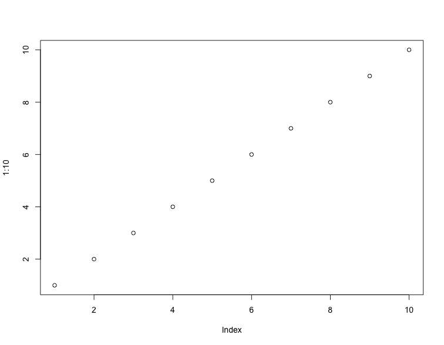

Description
The tab titles are names of list members, and the tab content contains the values of list members. If a list member is also a list, it will be represented recursively with a child tabset.
Usage
tabset(x, value = str)
tab_content(x)Arguments
x |
A list for |
value |
A function to print the value of a list member. By default,
|
Value
A character vector of Markdown that can be rendered to HTML with
litedown::mark().
Examples
xfun::tabset(iris)
xfun::tabset(iris, dput)
xfun::tabset(iris, print)
# a deeply nested list
plot(1:10)

p = recordPlot()
xfun::tabset(p)
# custom tab content
xfun::tabset(iris, function(x) {
if (is.factor(x)) {
res = c("A factor with levels: ", xfun::join_words(levels(x), before = "`"))
xfun::tab_content(res)
} else print(summary(x))
})